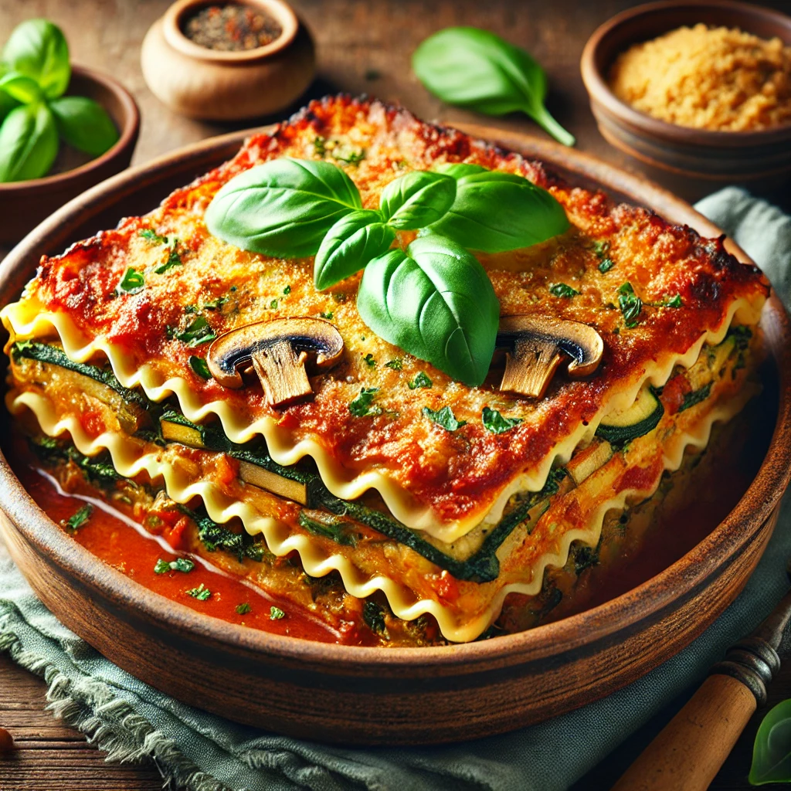

Home
Lasagna

Description
Vegan lasagna is a delicious and hearty dish made with layers of pasta, vegetables, and a rich tomato sauce.
It's a perfect meal for those who follow a plant-based diet or anyone looking for a healthy and satisfying dinner option.
Ingredients
- Lasagna noodles
- Olive oil
- Garlic
- Onion
- Tomato sauce
- Zucchini
- Spinach
- Mushrooms
- Vegan ricotta
- Salt
- Pepper
- Italian seasoning
Steps
- Preheat the oven to 375°F (190°C).
- Cook the lasagna noodles according to the package instructions.
- Heat olive oil in a pan and sauté the garlic and onion until translucent.
- Add the tomato sauce, zucchini, spinach, and mushrooms. Cook until the vegetables are tender.
- Season with salt, pepper, and Italian seasoning to taste.
- In a baking dish, layer the lasagna noodles, vegetable mixture, and vegan ricotta.
- Repeat the layers until all ingredients are used, ending with a layer of tomato sauce.
- Bake in the preheated oven for 30-35 minutes, or until the top is golden and bubbly.
- Let the lasagna cool for a few minutes before serving.